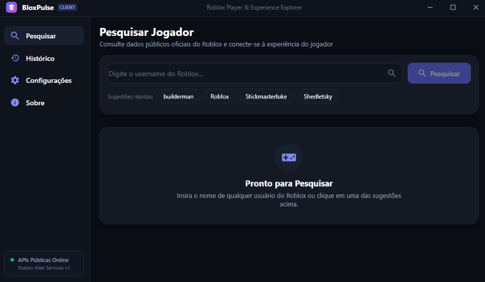

Todo jogador do Roblox, a uma busca de distância.
BloxPulse consulta os dados oficiais do Roblox Web Services e conecta você à experiência de qualquer jogador — perfil, histórico e status, direto do seu computador.
Requer Windows 10 ou 11. Não é necessário fazer login na sua conta Roblox.

Feito para quem vive pesquisando jogadores.
Cada tela do BloxPulse existe para responder uma pergunta rápida sobre um jogador ou uma experiência.
Pesquisa instantânea
Digite um username e veja o perfil completo do jogador em segundos, sem telas de carregamento intermináveis.
Histórico de buscas
Volte a qualquer jogador ou experiência que você já consultou, sem precisar digitar o username de novo.
Dados oficiais do Roblox
Tudo o que aparece na tela vem direto do Roblox Web Services — nada de scraping ou fontes não oficiais.
Conexão com experiências
Veja em qual experiência um jogador está agora e acesse os detalhes dela com um clique.
Sugestões rápidas
Atalhos para perfis populares, como Roblox, builderman e Stickmasterluke, prontos para consultar.
Status em tempo real
Um indicador discreto mostra se as APIs públicas do Roblox estão disponíveis antes mesmo de você pesquisar.
Como funciona
Do download à primeira busca, três passos.
Baixe e instale
Baixe o BloxPulse para Windows 10 ou 11. A instalação leva menos de um minuto e não pede login na sua conta Roblox.
Pesquise um jogador
Digite o username na tela de pesquisa, ou escolha uma das sugestões rápidas para começar a explorar.
Explore o perfil
Veja o perfil público, o histórico do jogador e conecte-se à experiência em que ele está agora.